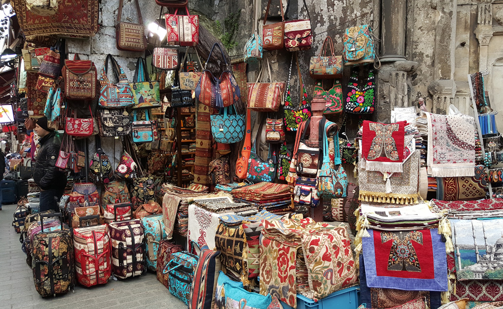
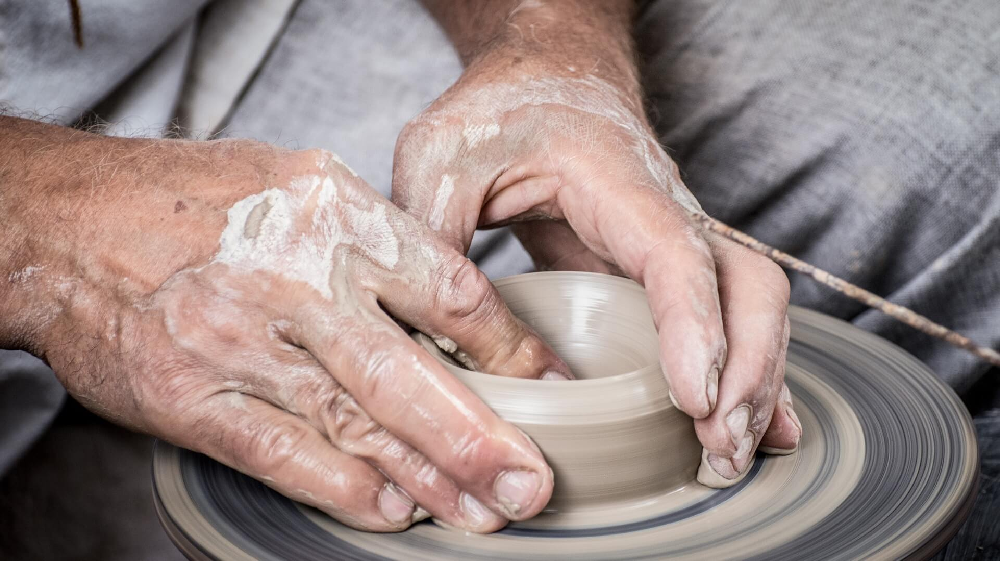

Đồ thủ công mỹ nghệ là gì?
Đồ thủ công mỹ nghệ là các sản phẩm được tạo ra bằng tay hoặc bằng công cụ đơn giản, thường mang tính nghệ thuật và thẩm mỹ cao. Các loại đồ thủ công mỹ nghệ có thể bao gồm đồ gốm, đồ gỗ, đồ da, đồ kim loại, đồ lụa, tranh vẽ, đồ đan, và nhiều loại sản phẩm khác. Đây thường là những sản phẩm được làm thủ công bởi các nghệ nhân có kỹ năng và sự sáng tạo.
Đồ gốm mỹ nghệ
“Đồ gốm mỹ nghệ” là các sản phẩm được làm từ chất liệu gốm, thường có giá trị nghệ thuật cao và được tạo ra bằng các kỹ thuật thủ công tinh tế. Các sản phẩm này thường được tạo ra để phục vụ mục đích trang trí, sưu tập hoặc sử dụng trong nghệ thuật và văn hóa. Gốm sứ mỹ nghệ Việt Nam tập hợp các sản phẩm được sản xuất bằng phương pháp thủ công có tính mỹ thuật cao và thường gắn với các làng nghề truyền thống, mang đậm bản sắc văn hóa dân tộc và quốc gia.
